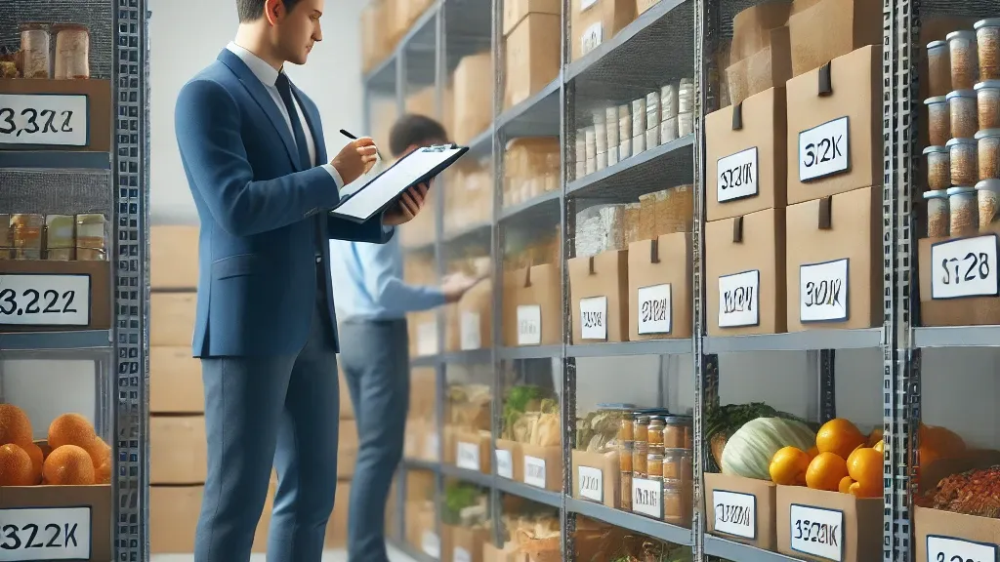
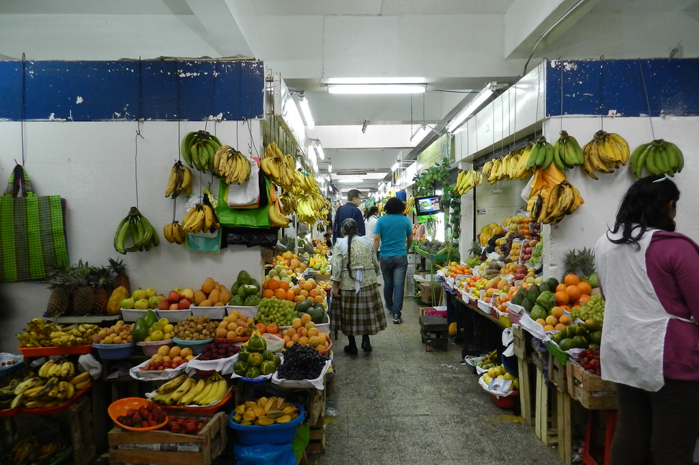

New Beginnings,Get to know our franchise
Be part of modernization
See Pandora's Fresh in Action
About The Product
About The Team
Our History
Pandora Fresh was born to address food waste and the manual management of perishable inventory. We created a platform with IoT sensors and intelligent software that monitors temperature, humidity, and expiration dates in real time, helping markets and restaurants reduce losses and ensure freshness.
Mission
Pandora's Fresh's mission is to optimize the management of perishable products with smart technology, helping to reduce waste, control costs, and ensure fresh and safe food.
Vision
The vision is to be the leading technology partner for the food sector in Latin America, promoting efficiency, sustainability, and zero waste.
Values
The values are based on innovation, sustainability and trust, pillars that guide every solution we offer.

Who We Are?
We are a multidisciplinary team of engineers, developers and food specialists working to reduce waste and optimize the management of perishable supplies through technology
Technological Development
Our development team creates innovative solutions using IoT technology and intelligent software to make perishable product management more efficient, safe and reliable.
Sustainability
Food and process specialists work to ensure that our solutions reduce waste and promote more responsible management of perishable products.
Social Impact
We focus on generating a positive impact on restaurants, markets and producers, helping to reduce waste and improve food security in the community.
What can you do with Pandora's Fresh?
Real-time monitoring
Control temperature, humidity and storage conditions of perishable products through IoT sensors.
Proactive alerts
Automatic notifications when products are close to expiring or there is a risk of deterioration.
Inventory management
Digital record of product inputs and outputs for complete stock control.
Risk prediction
Analyzes historical and current data to anticipate losses or quality problems.
Automated reports
Generates periodic reports on inventory, shrinkage and product status.
Supplier integration
Connect with suppliers to coordinate purchases and optimize stock replenishment.
Designed for:
Small and Medium Restaurants
Many restaurants in Lima and other cities manage inventories of perishable products manually, which generates waste and economic losses. For these businesses, Pandora's Fresh offers a platform that allows them to monitor their supplies in real time, reduce shrinkage and ensure the freshness and quality of the food they serve to their customers.
Challenges:
- Dependence on manual methods to control inventories.
- Food waste and frequent economic losses.
- Difficulty in guaranteeing the freshness and quality of products.
Benefits of Pandora's Fresh:
- Real-time monitoring: Allows you to know the status of perishable products, including temperature, humidity and expiration.
- Waste reduction: Proactive alerts help prevent losses and optimize the use of supplies.
- Quality improvement: Ensures that food remains fresh and safe for customers.

Suppliers and Stalls in Supply Markets
Many stalls in traditional markets handle fresh products manually, which generates losses due to deterioration and affects their profitability. Pandora's Fresh offers tools to monitor the conditions of their supplies, improve traceability and reduce waste in fruits, vegetables, meats and fish.
Challenges:
- Manual inventory control, which causes losses due to deterioration.
- High turnover of fresh products with little traceability.
- Difficulty in guaranteeing the freshness and quality of food sold.
Benefits of Pandora's Fresh
- Monitoring of perishable products: Allows real-time control of the freshness and conditions of fruits, vegetables, meats and fish.
- Loss reduction: Proactive alerts help prevent waste and optimize inventory turnover.
- Improved profitability: Facilitates purchase and sale decisions based on accurate data, ensuring quality products for customers.
With the support of technology and the commitment of restaurants and markets, Pandora's Fresh seeks to transform the management of perishable products, reducing waste and ensuring that food arrives fresh and safe to consumers.
What do our users say?

Thanks to Pandora's Fresh, restaurants in our community can now monitor their perishable supplies in real time and reduce losses. Before we depended on manual methods that caused constant shrinkage and waste.
María Rodríguez
45 years old • Villa El Salvador, Lima

The platform has allowed us to better control the freshness and conditions of our perishable products. Before, much of our merchandise was lost due to lack of monitoring and traceability.
Juan Pérez
38 years old • San Juan de Lurigancho, Lima
Terms and Conditions
Available Document
Check our complete terms and conditions to know your rights and responsibilities when using Pandora's Fresh.
Important Aspects
-
Privacy: We protect your inventory data and only share it when necessary to provide the service.
-
Responsible Use: The platform is designed for restaurants and markets to manage their products efficiently and reliably.
-
Responsibility: Users are responsible for correctly registering their supply data to ensure the effectiveness of the system.
Contact Support
Send Feedback
Do you have comments or suggestions? We would love to hear from you.
Technical Support
Need technical help? Contact our support team.
Notification Preferences
Frequently Asked Questions
How can I access a frequently asked questions section?
To access the frequently asked questions, navigate to the main menu of the application and select the "Help" or "FAQ" option. There you will find answers to the most common questions about using Pandora's Fresh and managing your perishable products.
How can I check the status of my perishable products?
In Pandora's Fresh you can monitor in real time the freshness and conditions of your products through IoT sensors and inventory records. The platform sends you alerts and reports to ensure that your supplies are kept in optimal conditions.
How do I receive alerts about products that are about to expire?
The platform sends automatic notifications when a product approaches its expiration date or storage conditions are not optimal, allowing you to take action before it is wasted.
Can I generate inventory reports automatically?
Yes, Pandora's Fresh generates periodic reports on inventory, shrinkage and product conditions, facilitating decision-making and cost control without having to do it manually.
Is it possible to integrate the platform with my suppliers?
Yes, you can connect your inventory with suppliers to coordinate replenishments, optimize purchases and always maintain sufficient fresh supplies available.
Can I access the platform from any device?
Yes, Pandora's Fresh is accessible from computers, tablets and smartphones, allowing you to monitor your inventory and receive alerts anytime, anywhere.
Download Pandora's Fresh
Join our community and transform the way you manage your perishable products . Available for iOS and Android.
Back to top